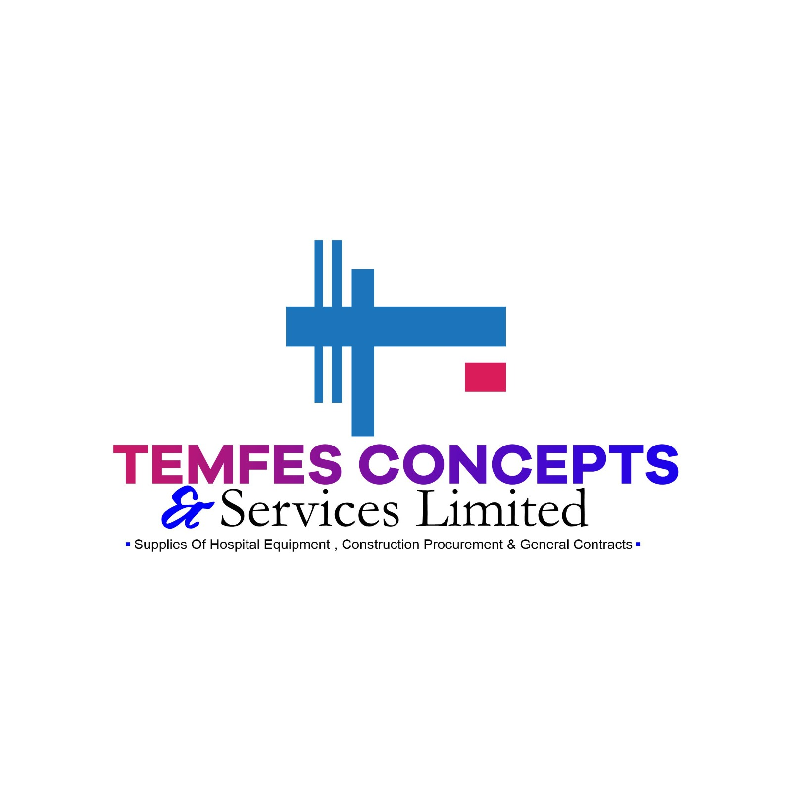

About Us
JLD Aveo+ Ventures is a technology solutions provider that has been serving individuals and businesses since its establishment in April 2020, amidst the challenges of the global pandemic. We specialize in six key areas, categorized into three distinct service offerings:
-
Technology Services:
At JLD Aveo+ Ventures, we offer a comprehensive range of ICT (Information and Communication Technology) services to address a wide spectrum of technological needs. From internet services to software maintenance, our team of experts is dedicated to delivering reliable and efficient solutions. -
Marketing and Branding Services:
Our company also provides top-notch marketing and branding services to help businesses promote their brand identity effectively. We offer high-quality Printing services, enabling our clients to produce impactful brochures, flyers, and business cards. Additionally, our Branding services encompass logo design, brand identity creation, and the development of strategic marketing strategies. -
Web Development Services:
With the ever-growing importance of establishing an online presence, JLD Aveo+ Ventures offers cutting-edge Web Development services. Our Software Development solutions are tailored to meet the unique requirements of our clients, delivering custom software solutions. We also specialize in Website Development, designing and developing websites that enhance businesses' online visibility and engagement.
Our commitment to providing a comprehensive range of technology-related services sets us apart from our competitors. We take pride in being a one-stop-shop solution for all our clients' technological needs. By ensuring seamless, professional, and secure services, we strive to exceed expectations and build a strong reputation in the industry.
At JLD Aveo+ Ventures, we embrace a forward-thinking vision: to become the premier provider of internet access with global relevance throughout the coming decades. Our mission is rooted in delivering seamless services with the utmost professionalism. We remain dedicated to utilizing up-to-date information technology and equipment, offering speedy and secured internet connections. Furthermore, our commitment extends to providing a conducive and comfortable environment that fosters distance-friendly interactions.
With a passion for innovation and customer satisfaction, JLD Aveo+ Ventures is committed to empowering individuals and businesses with technology solutions that drive growth and success.
Core Values
-
Excellence:
At JLD Aveo+ Ventures, we are committed to excellence in everything we do. We strive to deliver exceptional technology solutions and services that meet and exceed the expectations of our clients. Our team of experts is dedicated to staying updated with the latest trends and advancements in the industry to ensure the highest level of quality and innovation. -
Customer-Centric Approach:
Our clients are at the heart of our business. We prioritize their needs and strive to provide them with tailored solutions that address their specific requirements. We value open communication, actively listening to our clients to understand their goals and challenges. By building strong relationships based on trust and transparency, we aim to become trusted partners in their technological journey. -
Reliability and Professionalism:
Trust is the foundation of our business. We take pride in our reputation for reliability and professionalism. We deliver our services with integrity, adhering to deadlines and providing consistent, high-quality results. Our team is composed of experienced professionals who are dedicated to upholding the highest standards of professionalism, ensuring that every interaction and project is handled with the utmost care and expertise. -
Innovation:
In a rapidly evolving technological landscape, innovation is key to staying ahead. We foster a culture of continuous learning and exploration, encouraging our team to think creatively and embrace new ideas. We are passionate about pushing boundaries, leveraging the latest technologies and methodologies to provide innovative solutions that drive business growth and success for our clients. -
Collaboration and Teamwork:
We believe that great achievements are the result of collaboration and teamwork. Our team works together seamlessly, leveraging each individual's expertise and strengths to deliver integrated and holistic technology solutions. We value diverse perspectives and actively foster an environment that encourages collaboration, open communication, and mutual respect among team members. -
Social Responsibility:
As a responsible corporate citizen, we recognize the importance of giving back to society. We actively seek opportunities to contribute to our community and make a positive impact. Whether through initiatives focused on digital inclusion, environmental sustainability, or supporting educational programs, we are committed to using our resources and expertise to create a better future for all.
These core values serve as the guiding principles that drive our company's culture and shape our interactions with clients, partners, and the community. We are dedicated to upholding these values in every aspect of our business, ensuring that JLD Aveo+ Ventures remains a trusted and reliable technology solutions provider that delivers excellence and adds value to our clients' businesses.
Team and Expertise
At JLD Aveo+ Ventures, our success is attributed to our exceptional team and their expertise in the field of technology solutions. We have assembled a highly skilled and diverse team of professionals who are passionate about their work and dedicated to delivering outstanding results for our clients. Our team comprises experts with specialized knowledge in various areas, allowing us to provide comprehensive technology solutions across multiple domains.
-
Expert Professionals:
Our team consists of experienced professionals with deep industry knowledge and expertise in their respective fields. From ICT services to computer training, marketing and branding, and web development, our team members bring a wealth of experience and skills to the table. They stay up-to-date with the latest industry trends and advancements, ensuring that we offer cutting-edge solutions to our clients. -
Collaboration and Teamwork:
We foster a collaborative work environment that promotes teamwork and synergy. Our team members work closely together, sharing insights, ideas, and best practices to provide integrated and cohesive solutions. By leveraging the collective expertise of our team, we can tackle complex challenges and deliver comprehensive technology solutions that meet the unique needs of our clients. -
Continuous Learning and Development:
Technology is ever-evolving, and we understand the importance of continuous learning and development. We encourage our team members to enhance their skills and knowledge through ongoing training programs, certifications, and professional development opportunities. This commitment to continuous learning ensures that our team remains at the forefront of technological advancements, enabling us to provide innovative and up-to-date solutions. -
Client-Centric Approach:
Our team is dedicated to understanding and addressing the specific requirements of our clients. We take the time to listen to their needs, goals, and challenges, allowing us to develop customized solutions that align with their business objectives. Our team members possess excellent communication and problem-solving skills, enabling them to collaborate effectively with clients and provide them with the best possible technology solutions. -
Passion and Dedication:
Our team members are driven by their passion for technology and their commitment to delivering excellence. They take pride in their work and go the extra mile to ensure client satisfaction. Their dedication is reflected in the quality of our services and the long-term relationships we build with our clients.
By combining the expertise of our team members, their collaborative approach, continuous learning mindset, and client-centric focus, we are able to provide superior technology solutions that drive success for our clients. Our team is the backbone of JLD Aveo+ Ventures, and their exceptional skills and dedication make us a trusted partner in meeting the technology needs of individuals and businesses.
Meet Our Talented Team
Now, let us introduce you to the faces behind JLD Aveo+ Ventures. Our dedicated team members are not only experts in their respective fields but also individuals with diverse backgrounds and unique perspectives. They bring their passion, skills, and unwavering commitment to every project we undertake.
With a collective wealth of experience and expertise, our team is equipped to handle a wide range of technology solutions. From software development to data analysis, from graphic design to digital marketing, our professionals excel in their areas of specialization.
As you continue reading, you'll have the opportunity to see the pictures and profiles of our talented staff members. Each individual contributes their distinct skills and knowledge, contributing to our collaborative and dynamic work environment.
We believe that the success of our clients stems from the expertise, dedication, and innovative thinking of our team. Our staff members are driven by a shared vision to deliver exceptional technology solutions and exceed client expectations.
Join us on this journey as we present our extraordinary team, ready to embark on new challenges and create transformative technology solutions for our valued clients.
Olumuyiwa Dare Emmanuel
CEO & Founder
JLD Aveo Plus Ventures
Kingdom Yakubu
Manager
JLD Aveo Plus Ventures
Benedict O. Ebeshi Esq
Legal / HR Manager
JLD Aveo Plus Ventures
Nkiruka Joy
HOD Customer Service
JLD Aveo Plus Ventures
Godwin Thomas
HOD Graphics & Branding
JLD Aveo Plus Ventures
Kadiri Ruth Ojonugwa
HOD Finance & Accounting
JLD Aveo Plus Ventures
Join Our Community
Thank you for taking the time to learn about our company and the comprehensive range of technology solutions we offer. We are excited to be your trusted partner in meeting all your technology-related needs. Whether you're an individual looking to enhance your skills, a business seeking to establish your online presence, or in need of reliable ICT services, we have you covered.
Now it's time to take the next step! We invite you to explore our products and services in more detail, browse through our portfolio, and see how we can help you achieve your technology goals. Contact us today for more information, to request a quote, or to schedule a consultation with our team of experts.
Don't miss out on the latest updates and industry insights! Stay connected by subscribing to our newsletter, where we share valuable information, technology tips, and exclusive offers. Join our community of tech enthusiasts and be the first to know about our latest innovations and promotions.
At our company, we are committed to providing you with professional, seamless, and customized technology solutions that drive your success. Get in touch with us now and let's embark on this technology journey together!
Customer Testimonials
Discover what our valued clients have to say about their experiences with JLD Aveo+ Ventures. We take pride in providing exceptional technology solutions that drive growth and success for individuals and businesses. Read through these testimonials to learn how our dedicated team, innovative approach, and customized services have made a difference in their technological journeys.
So far JLD has been the best for the past 3years I have been patronizing you. I was once gifted a tea cup and also a birthday design from you which makes me super excited. Thanks for your quality work.
Wey Martha
JLD Aveo Plus Ventures is a home for every customer satisfaction, they are affordable for all kinds of printing jobs you are inspired by. They are friendly and accommodating.
 Temfes Concepts and services limited
Your computer school....leads while others follow. Lectures, well arranged,precise and standard enough for any class of individuals to understand and practice with little or no supervision.....Services quite impressive and I recommend JLD AVEO anytime, anyday because I have tried and tested physical class and online programs and am convinced beyond doubt.
Nurse Joy Dikko